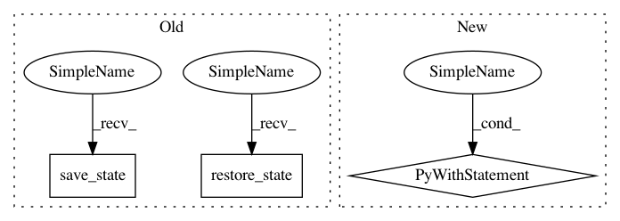

4179b7f166ba980ed226cdbe52984965f1b335c4,enthought/chaco/tools/regression_lasso.py,RegressionOverlay,_draw_component,#RegressionOverlay#,54
Before Change
gc.save_state()
gc.translate_ctm(x, y)
self._label.draw(gc)
gc.restore_state()
// draw the line
slope, y0 = selection.fit_params
f = lambda x: slope*x + y0
cx, cy = c.map_screen([selection.centroid])[0]
left = c.x
right = c.x2
left_x = c.map_data([left, c.y])[0]
right_x = c.map_data([right, c.y])[0]
left_y = f(left_x)
right_y = f(right_x)
left_pt, right_pt = c.map_screen([[left_x, left_y], [right_x, right_y]])
gc.save_state()
try:
gc.set_line_dash(self.line_style_)
gc.set_stroke_color(self.line_color_)
gc.set_line_width(self.line_width)
After Change
left_pt, right_pt = c.map_screen([[left_x, left_y], [right_x, right_y]])
with gc:
gc.set_line_dash(self.line_style_)
gc.set_stroke_color(self.line_color_)
gc.set_line_width(self.line_width)
gc.move_to(*left_pt)
gc.line_to(*right_pt)
gc.stroke_path()
return
In pattern: SUPERPATTERN
Frequency: 11
Non-data size: 3
Instances
Project Name: enthought/chaco
Commit Name: 4179b7f166ba980ed226cdbe52984965f1b335c4
Time: 2010-12-19
Author: warren.weckesser@651a555e-23ca-0310-84fe-ca9f7c59d2ea
File Name: enthought/chaco/tools/regression_lasso.py
Class Name: RegressionOverlay
Method Name: _draw_component
Project Name: enthought/chaco
Commit Name: 4179b7f166ba980ed226cdbe52984965f1b335c4
Time: 2010-12-19
Author: warren.weckesser@651a555e-23ca-0310-84fe-ca9f7c59d2ea
File Name: enthought/chaco/tools/regression_lasso.py
Class Name: RegressionOverlay
Method Name: _draw_component
Project Name: enthought/chaco
Commit Name: 4179b7f166ba980ed226cdbe52984965f1b335c4
Time: 2010-12-19
Author: warren.weckesser@651a555e-23ca-0310-84fe-ca9f7c59d2ea
File Name: enthought/chaco/tools/toolbars/plot_toolbar.py
Class Name: PlotToolbar
Method Name: overlay
Project Name: enthought/chaco
Commit Name: 4c96280f3b91a5ef7b63dc572012f273c7ca0b46
Time: 2010-10-10
Author: warren.weckesser@651a555e-23ca-0310-84fe-ca9f7c59d2ea
File Name: examples/chaco_trait_editor.py
Class Name: RangeKnobsOverlay
Method Name: _circle
Project Name: enthought/chaco
Commit Name: 394a684529f480a77cd5a97effe3dc9170f2d916
Time: 2010-10-10
Author: warren.weckesser@651a555e-23ca-0310-84fe-ca9f7c59d2ea
File Name: enthought/chaco/candle_plot.py
Class Name: CandlePlot
Method Name: _draw_plot
Project Name: enthought/chaco
Commit Name: 4179b7f166ba980ed226cdbe52984965f1b335c4
Time: 2010-12-19
Author: warren.weckesser@651a555e-23ca-0310-84fe-ca9f7c59d2ea
File Name: enthought/chaco/tools/cursor_tool.py
Class Name: BaseCursorTool
Method Name: _draw_marker
Project Name: enthought/chaco
Commit Name: 4c96280f3b91a5ef7b63dc572012f273c7ca0b46
Time: 2010-10-10
Author: warren.weckesser@651a555e-23ca-0310-84fe-ca9f7c59d2ea
File Name: examples/canvas/plot_clone_tool.py
Class Name: PlotCloneTool
Method Name: overlay
Project Name: enthought/chaco
Commit Name: b39b28808d86d98421ad605d7ab1269559db913e
Time: 2010-10-19
Author: warren.weckesser@651a555e-23ca-0310-84fe-ca9f7c59d2ea
File Name: enthought/chaco/multi_line_plot.py
Class Name: MultiLinePlot
Method Name: _render_icon
Project Name: enthought/chaco
Commit Name: 4c96280f3b91a5ef7b63dc572012f273c7ca0b46
Time: 2010-10-10
Author: warren.weckesser@651a555e-23ca-0310-84fe-ca9f7c59d2ea
File Name: examples/canvas/transient_plot_overlay.py
Class Name: TransientPlotOverlay
Method Name: overlay
Project Name: enthought/chaco
Commit Name: 4c96280f3b91a5ef7b63dc572012f273c7ca0b46
Time: 2010-10-10
Author: warren.weckesser@651a555e-23ca-0310-84fe-ca9f7c59d2ea
File Name: examples/canvas/cliptest.py
Class Name: Box
Method Name: _draw_mainlayer
Project Name: enthought/chaco
Commit Name: b39b28808d86d98421ad605d7ab1269559db913e
Time: 2010-10-19
Author: warren.weckesser@651a555e-23ca-0310-84fe-ca9f7c59d2ea
File Name: enthought/chaco/multi_line_plot.py
Class Name: MultiLinePlot
Method Name: _render
Project Name: enthought/chaco
Commit Name: 4179b7f166ba980ed226cdbe52984965f1b335c4
Time: 2010-12-19
Author: warren.weckesser@651a555e-23ca-0310-84fe-ca9f7c59d2ea
File Name: enthought/chaco/tools/line_segment_tool.py
Class Name: LineSegmentTool
Method Name: overlay